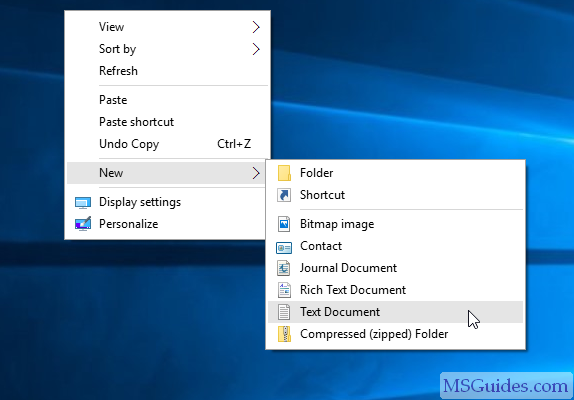
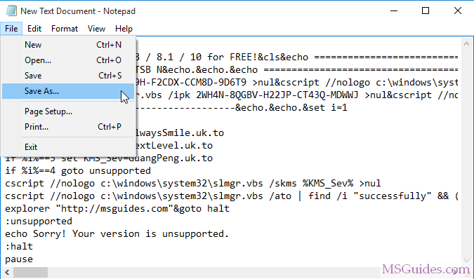
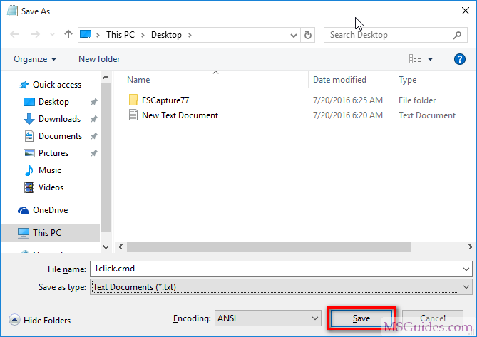
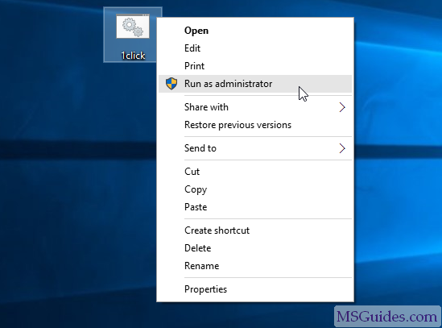
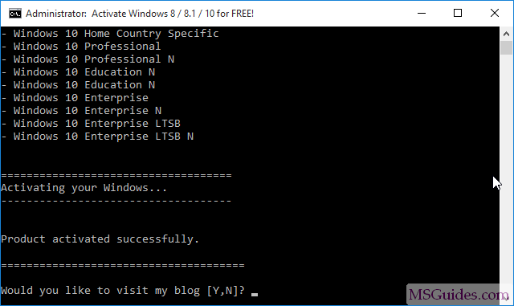
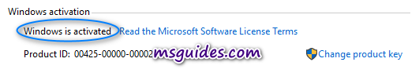

WINDOWS AND OFFICE ACTIVATION PROCESS

Step 2.1: Create a new text document.
Step 2.2: Copy and Paste the code from files below into the text file. Then save it as a batch file (named “1click.cmd”).
For all windows
For all windoindividual windows
windows-10-1 win10act2 win10act3 win8act win7actindividual office
office16act office16act2 office19act office21actAll offics
save the file with .cmd extention
 Step 2.3: Run the batch file as administrator.
Please wait a minute.
Check the activation status again.
Note: If you guys see three times the same error message saying that the connection to the KMS server was unsuccessful, please read here